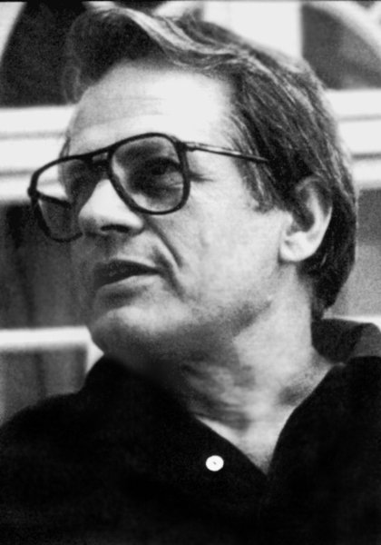
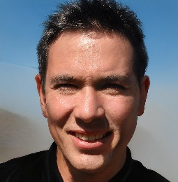
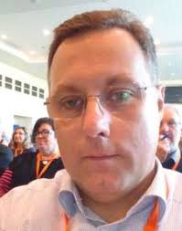
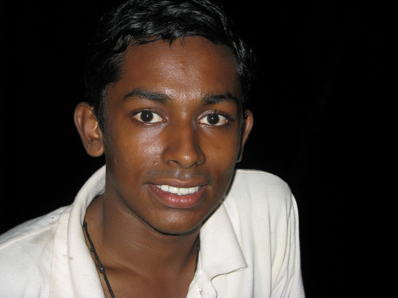
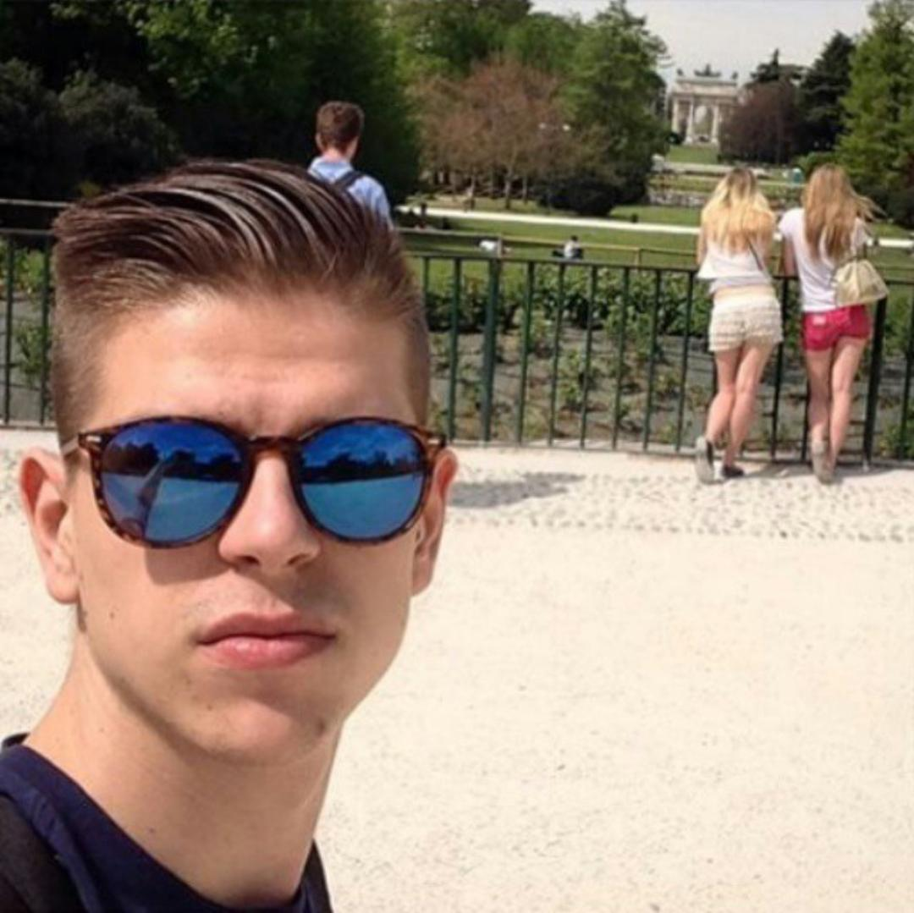
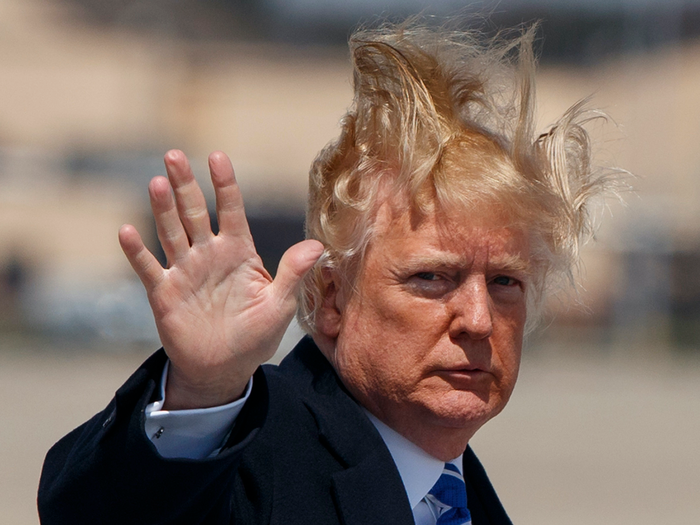

Popis poznatih Benkovčana
Radovan Sulejmanović

Osnivač benkovačkog sajma.
Haris Penisović
Poznati benkovački nogometaš i izumitelj čušpajza.
Drahmapagan Hasanagić

Poznati benkovački pjesnik i redatelj. Najpoznatiji po svojoj pjesmi "Oj lijepi Benkovče". Više o tome možete pročitati
ovdje.
Jandomir Nilbović

Osnivač Sveučilišta u Benkovcu.
Habib Tabib

Jedini benkovački crnac.
Adis Misaljević

Poznati benkovački političar. Bivši podpredsjednik stočnog odbora benkovačkog sajma.
Jure Panceta

Najpoznatiji benkovački vlogger, poznatiji kao BenkoVAC_YouTubber42.
Mirajlana Benković
Najzgodnija benkovačka studentica. Cura od Jure Pancete.
Donald Trump

Izvorno benkovačko ime Danilo Trampić, poamerikanizirano u Donald Trump.
Arnold Schwarzenegger

Izvorno benkovačko ime Armin Čengić, šire poznatiji kao Arnold Schwarzenegger. Prezime potiče od njemačkog naziva za "crnu zemlju" (schwarz neger), jer njegovi roditelji su posjedovali najplodnija polja u čitavom Benkovcu.